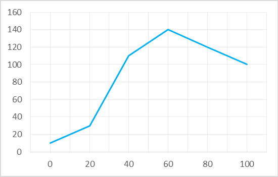
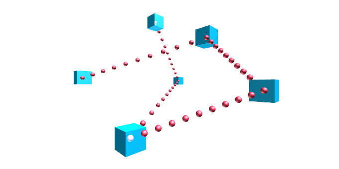

Response Curves
A response curve is an easy-to-define piece-wise linear curve. They are described by Bob Alexander in AI Programming Wisdom in the article The Beauty of Response Curves. Below is an example:

The curve above can be defined as follows:
var inputs = new List<float> {0, 20, 40, 60, 100};
var outputs = new List<float> {10, 30, 110, 140, 100};
var curve = new ResponseCurveFloat(inputs, output);
You can then sample this curve at any point:
float value = curve[30f]; //value is 70
Input samples need not be evenly spaced, and you can sample the curve at any floating point value. The curve is clamped
at the ends, so in the example above, curve[150f] would give the value 100.
Response curves all implement the IResponseCurve<T> interface. The Extensions library provides response curves for several types. These are some examples:
Tip
Our Colors library also contains a ResponseCurveHSLColor.
Response curves have many applications. They can be used for:
- Lookup tables for function approximations.
- Approximating smooth curves.
- Defining paths in 2D or 3D space.
- Defining color gradients.
- Implementing arbitrary probability distributions.

It is trivial to implement response curves for your own types, by following these steps:
- Extend your class
ResponseCurveMyTypefrom ResponseCurveBase<T>. - Implement the abstract method Lerp(T, T, float) to provide a linear interpolation of the relevant type.
The library also provides a class for doing dithering for discreet valued curves. See Gamelogic.Extensions.Algorithms. DitherResponse.